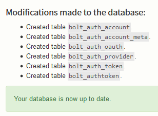

The default Twig templates in Auth have been done with Bolt's base theme
(currentlybase-2016) in mind.
If you are setting up Auth for the first time, you may find it useful to first test on a site set up to run the current base theme, and then switch over when you're happy with how it is working.
Install the extension
See the installation page, and ensure you've updated the site's database
Enable debug mode to get additional feedback from Auth during set up.
Update database

Enable an authentication provider
Set up the Local authentication provider, and set enabled: true
providers:
local:
enabled: true
keys:
client_id: localdefault
client_secret: localdefault
scopes: [ user ]
Configure outgoing mail
You should have already done this as part of your inital setup of Bolt. But double-check that bolt can send mail to users and auth. The Auth plugin relies on outgoing mail to be working and may fail silently if it can't. Look for the mailoptions setting in config.yml
Note: On some servers it is required that you set a correct name and email address for the notifications. If this is not configured your email may not be sent at all.
notifications:
name: This is your email name
email: noreply@example.com
Enable registration
In order to register your first account, you need to enable registration in your Auth configuration file, e.g.:
registration:
enabled: true
Note: If you get 404 responses when trying to visit the registration URL then most likely you forgot to enable this setting.
Templates
Templating is very configurable. At a minimum, Auth needs "parent" templates to inherit layout from.
Usually the parent role is split in two groups, "authentication", and "profiles".
By default, Auth will use its own minimal parent templates that extend the Bolt base theme's master template.
However if you wish to create your own, just set the relative path to them in your theme directory in Auth configuration file, e.g.:
templates:
authentication:
parent: auth/_authentication.twig
profile:
parent: auth/_profile.twig
Finally add the blocks from the sections below to your desired position your custom parent template.
Authentication
{# Password & OAuth2 provider login forms #}
{% block login %}
{% endblock login %}
{# Logout form #}
{% block logout %}
{% endblock logout %}
{# Password recovery forms #}
{% block recovery %}
{% endblock recovery %}
Profiles
{# Auth profile edit & view forms #}
{% block auth %}
{% endblock auth %}
Set up initial test greeting
NOTE: Do not attempt to complete this section by adding this Twig snippet to a HTML field in a ConentType record … It will not work.
Add the snippet below somewhere in a template for an existing URL, and browse to the URL.
{% if is_auth() %}
{% set auth = auth() %}
<p>Hello, {{ auth.displayname }}. You were last seen at {{ auth.lastseen }},
logging on from {{ auth.lastip }}, and your email is {{ auth.email }}</p>
{% else %}
<p>Welcome visitor from the Internet!</p>
{% endif %}
When you've not yet registered and logged in, you should see the message "Welcome visitor from the Internet!" displayed.
Upon login (still coming below), refreshing this page should display the personalised greeting.
Registering your first user
If everything so far has worked, you should now be able to visit the
registration page, by default found at the URI /auth/profile/register
You will require a valid email address, e.g. DNS has a valid mail server
registered. Meaning @example.com won't work
Final words
The following links might be good next places to look:
- Form Display gives details on customising Twig template rendering
- Twig Functions provides a list of available Twig template functions
- Authentication Providers for details on adding OAuth2 providers like Facebook & Google
- Routes & URLs if you'd like to understand, or customise, some of the routes used by Auth
- Example: Menu Entries gives a small example of a menu for Auth specific entries